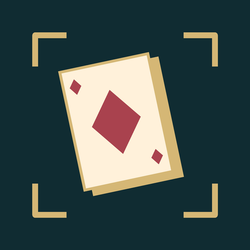

Card Counter
Learn real card counting in a city story. Six-deck blackjack, no real money.
You step off a bus into a strip-lit city with one bag and an address. Mara counted cards for a living, and what she remembers is not the winning nights, it is the nights she knew when to stop. Card Counter teaches both halves. Take a seat at the Copper Room when you want one, play real six-deck blackjack with her coaching on or off, signal the running count between deals, then convert it to a true count. Basic strategy is checked against an independently written chart on every hand, every dealer upcard and every legal action. When the room starts watching you, leave. Sleep, and find out what the street did without you. Three endings, decided by the days you put in and the agreements you kept, never by a final hand. No wagering, no chips to buy, no cashout.
Get it on Google Play